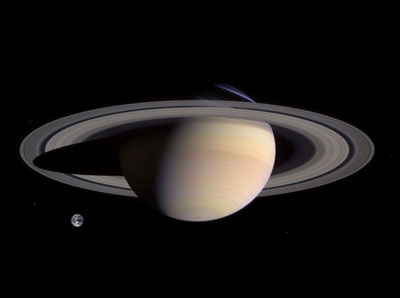

|
O Sistema Solar é constituído por oito planetas principais, são eles: Mercurio, Venus, Terra, Marte, Júpiter, Saturno, Urano e Netuno.
Saturno é o sexto planeta a partir do Sol e o segundo maior do Sistema Solar atrás de Júpiter. Pertencente ao grupo dos gigantes gasosos. Uma das características mais notáveis de Saturno é seu complexo e proeminente sistema de anéis, formados por gelo de água. Além dos anéis, mais de sessenta satélites naturais ao seu redor, dos quais destaca-se Titã, envolto em uma espessa atmosfera de metano. |
| Saturno | |||||||||||
|---|---|---|---|---|---|---|---|---|---|---|---|
|  |
|
Fonte wikipedia